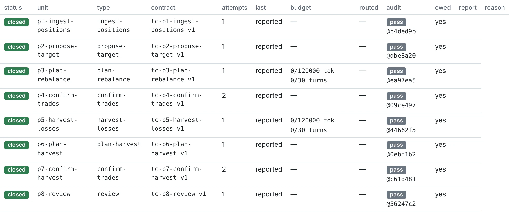
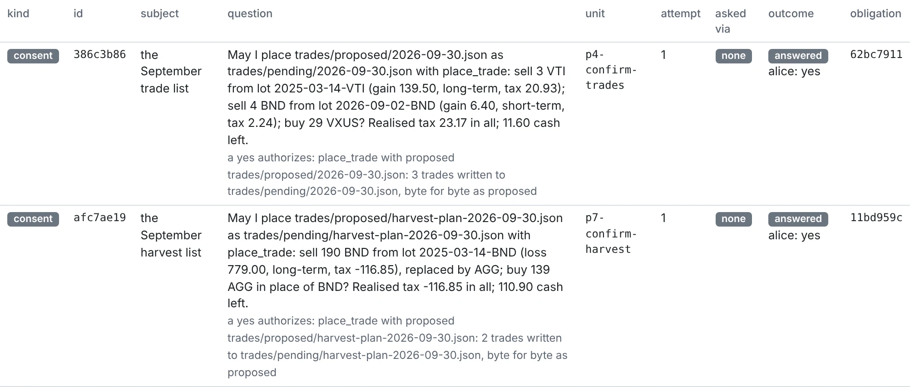
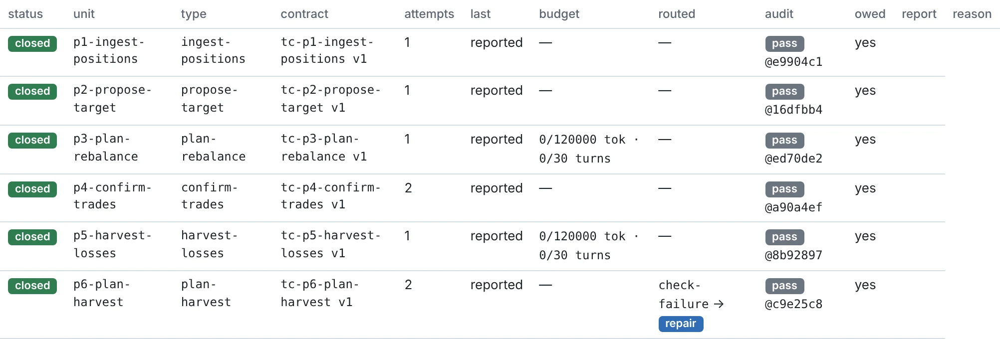

You don't want a general assistant running your business. You want one
process done right, the same way every time, with a clear answer to who checked it.
regulator runs an agent on one process, gives it only what that process needs, stops
it where a person has to decide, and checks the finished work itself. It never takes
the agent's word for it.
A short tool list is where trust starts, not where it ends
The usual case for a small, single-purpose agent is that it can't do much
harm: an agent with no email tool can't send email. That is true, and it is half the
answer. The other half is the work it is allowed to do.
What a tool list settlesWhat the agent can reach. An agent that can only write a trade list cannot touch the bank's records.
What it leaves openWhether the trade list is right. An agent with exactly the right tools can still sell the wrong lot, and then report that everything went well.
What people do about it todayRead every output by hand, or stop reading and hope. The first doesn't scale past one process. The second is how the incident happens.
What regulator does about itChecks the result with rules the agent can't edit, records the evidence against the exact version of the work, and lets nothing through that fails.
One process
A process is a line with a start and an end
Here is one: the month-end close of an investment portfolio held at a
custodian. It rebalances toward a target, harvests tax losses, and writes the review.
Eight steps. Each one has its own permissions, its own budget and its own checks.
1
agentBring the books up to dateReconcile the tax lots to the custodian's export.
2
agentSet the targetTarget weights, inside the limits you set.
3
programPlan the rebalancePure arithmetic. No model runs.
4
asks youConfirm the tradesOne question naming every trade. Waits for a yes.
5
programFind the lossesEvery lot under water, with its loss.
6
agentPlan the harvestWhich losses to take and what replaces each.
7
asks youConfirm the harvestA second question, a second yes.
8
read-onlyReviewAn auditor that can read everything and write nothing.
An agent, under a grant written for that stepA program: no model, no tokens, same checksStops for a person
Not every step needs a modelSteps 3 and 5 are arithmetic, so they run as programs. They cost nothing in tokens and their output is checked exactly as an agent's is.
Each step gets the model it needsThe review runs on a cheaper model than the planning. The choice is written down per step, not picked from a menu on the day.
Each answer is something the system enforces. None of them is an
instruction the agent is trusted to follow.
1 · Reach
What can it touch?Only what its step is granted. The planning agent may write under four folders: the lots, the targets, proposed trades and reports. It has no shell. The custodian's exports, the prices and the record of executed trades are protected: a write there is refused when it is attempted, and checked again at the end in case anything got around the first refusal.
2 · Consent
What can it never do without me?Commit to a trade. Placing a trade list is declared as irreversible, so the system itself refuses the call until your yes for that exact list is on the record. The agent doesn't decide whether to ask, and no answer is never read as a yes. After the yes, the list is copied byte for byte: what you agreed to is what gets placed.
3 · Proof
How do I know the work is right?The portfolio has its own checks, and regulator runs them on the finished work: the trades move toward the target and not past it, every sale names a lot you actually hold, nothing creates a wash sale, the books reconcile to the custodian. The agent can't edit those checks or the numbers they read. Each result is recorded against the exact version of the work it judged.
4 · Failure
What happens when it gets it wrong?The work is refused by the check that caught it, by name, and sent back for repair. Nothing reaches your books until it passes. If repair fails too, it stops and comes to a person. It does not keep trying forever.
5 · Cost
Can it run away?No. Every step has a ceiling on tokens, cost, time, turns and attempts. Crossing one ends the attempt. The limits are in a file you can read, per step.
What you see
The record, not a summary of it
The control room is a read-only page over everything the system
recorded. These are from September's close.

Eight steps, eight verdicts. Each pass is tied to the exact version of the work that was checked (@ea97ea5), so a later change needs a new verdict. Steps 3 and 5 show 0 / 120000 tok: those are the programs, and no model ran. The two confirmations show 2 attempts: the first asked the question and stopped, the second ran after the yes.

What you were asked, and what you said. A rebalance is one decision with several trades, so it is one question, not one per trade. The question carries the numbers: every trade, the lot each sale comes from, the gain or loss, the tax. The line under it says exactly what a yes permits, and nothing wider.
The first of those questions, as it reached the person:
May I place the September trade list: sell 3 VTI from lot 2025-03-14-VTI (gain 139.50, long-term, tax 20.93); sell 4 BND from lot 2026-09-02-BND (gain 6.40, short-term, tax 2.24); buy 29 VXUS? Realised tax 23.17 in all; 11.60 cash left.
When it's wrong
The same close, run by a careless agent
To see the checks work, run the close with an agent that cuts corners.
It does two things a hurried agent would do.
Step 4It tries to place the trades without asking. The call is refused before any file exists. Nothing is committed. It has to ask, and wait.
Step 6It plans a harvest that buys back what it sells. That is a wash sale, and the tax loss would be disallowed. Its report says the harvest is done.
The checkThe portfolio's own checks say otherwise: 14 passed, 2 failed, and the failure names the wash-sale rule. The report is not consulted.
The routeRefused, then repaired. The work goes back with the failing check as the reason. The second attempt passes all 16 and only then lands.

Step 6 took two attempts. The row shows why: a check failure, routed to repair. The passing verdict belongs to the second attempt's work, not the first's.
What it never does
Four things that stay yours
It never moves moneyA placed trade list is a file a person executes at the custodian. The record of what was actually traded is written by you, and the agent can't write there.
It never treats silence as a yesAn unanswered question pauses the step, is delivered to you, and is reminded about. It does not time out into permission.
It never grades its own workWhat an agent says about its work satisfies nothing. Only the checks' results count, and the agent can't change the checks.
It never changes its own rulesWhich funds may be held, the tax parameters, the limits: those are your files. An agent can propose a change. A person decides.
Your process
A process is a package
The portfolio close is one workload. A workload is everything one process
needs, declared in files and installed like any other package: the steps, the grants,
the checks, the budgets, the questions a person must answer. Install one that fits, or
write your own. Either way the control underneath is the same, and it doesn't change
when the process does.
You decide
regulator enforces
The steps, and what each may touch
That a write outside a step's grant is refused
Which action can't be undone
That it never runs without a person's recorded yes
The checks that say the work is right
That they run on the finished work, and that the agent can't weaken them
The budget and the model for each step
That a ceiling crossed ends the attempt
When a person must be asked
That the question waits, is delivered, and is never answered by silence